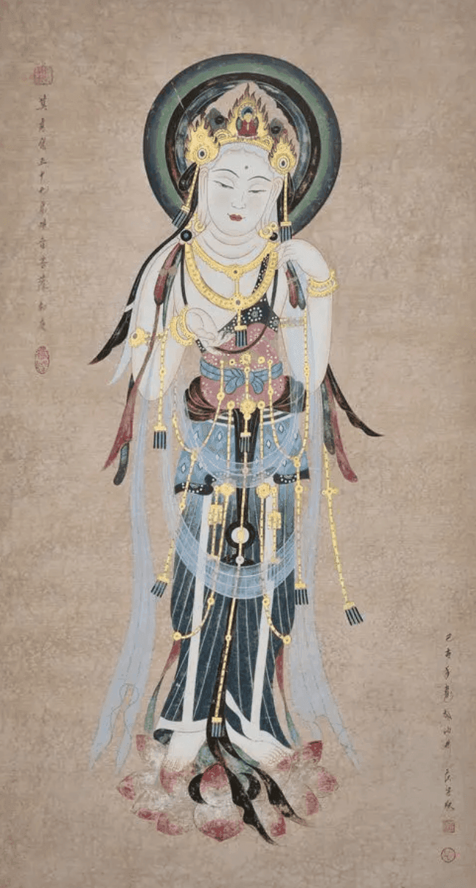

瑶绣的产生(The origin of Yao embroidery)

乳源瑶绣是瑶族人民在长期生活实践中发展出来的一种独特刺绣艺术形式。其起源可追溯到几百年前，是瑶族女性用来表达信仰、记录历史、传承文化的重要方式。传统瑶绣多用于服饰、头巾、背带、被面等生活用品上，以其色彩鲜艳、图案独特、工艺精湛而闻名。
瑶绣的图案元素丰富，包括龙凤、蝴蝶、山水、花鸟、太阳等自然意象，以及体现民族信仰的神话形象与图腾符号。这些图案不仅具有审美价值，更承载着瑶族人民对美好生活的向往和对祖先文化的尊重。
乳源是广东省唯一的瑶族自治县，也是南岭山脉中的一块多民族文化交融之地。乳源瑶绣因其地域性和民族性而具有极强的文化标识性，被誉为“穿在身上的史诗”，展现了岭南少数民族独有的艺术魅力。
然而，随着时代的变迁，传统瑶绣逐渐面临失传的风险。所幸近年来通过非物质文化遗产保护政策的推动，乳源瑶绣得以系统性整理和传承，越来越多的年轻人开始学习瑶绣技艺，使这一民族艺术焕发新生。
各级政府和民间机构积极组织瑶绣展览、比赛和产业化尝试，将传统技艺与现代设计相结合，不仅推动了乡村振兴，还让乳源瑶绣走出大山，走向世界，成为中华优秀传统文化的一张亮丽名片。
瑶绣是全人类的非遗瑰宝。乳源在中国，纹样展厅走向世界。